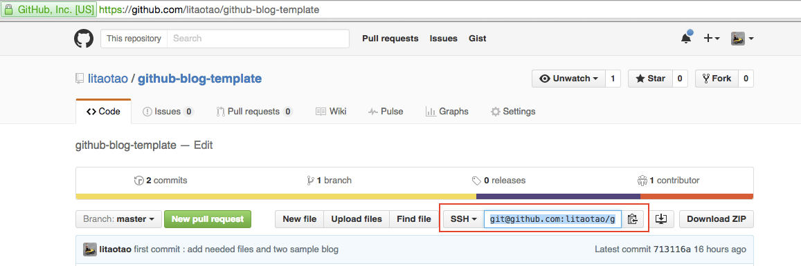
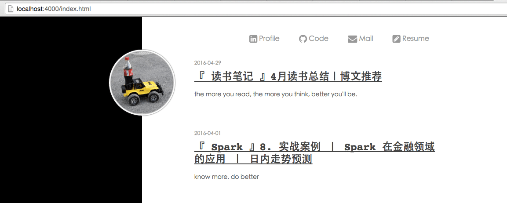
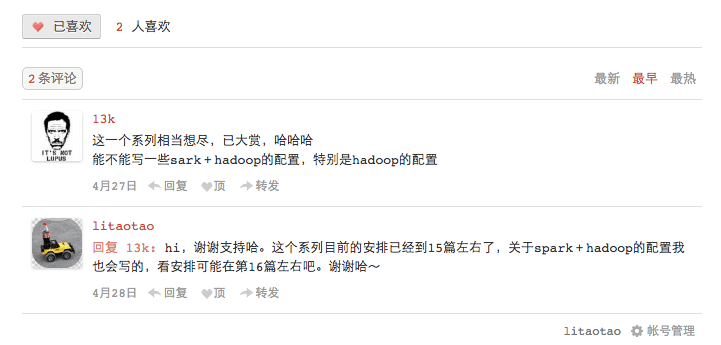
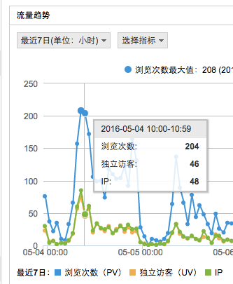
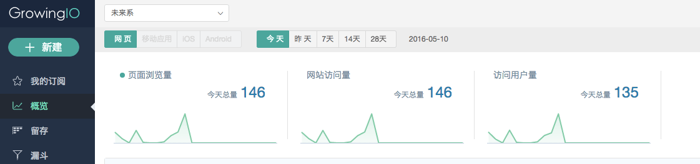
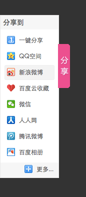

如何使用 github pages 搭建博客
2016-05-10
写在前面
使用 github 也快有3年了，的确觉得 github 的方便，易用，而且不仅仅在版本控制方面［版本控制方面个人感觉比 svn 好用了太多太多］，而且还提供了一个平台，让你随时跟进最近技术和趋势。今天就来说说其中一个比较实用
ps: 本文对应的 github repo 在这里：https://github.com/litaotao/github-blog-template
1. 最简单的步骤
- step 1 : 新建一个 repo，并克隆 repo 到本地
repo 名定为 你的github用户名 + .github.io，比如说，我的 github 用户名叫
litaotao, 那新建的 repo 名就叫litaotao.github.io
- step 2 : 克隆模版

使用 git 命令克隆模版：git clone git@github.com:litaotao/github-blog-template.git
taotao@mac007:~/Desktop/tmp$git clone git@github.com:litaotao/github-blog-template.git
Cloning into 'github-blog-template'...
remote: Counting objects: 75, done.
remote: Compressing objects: 100% (68/68), done.
remote: Total 75 (delta 4), reused 72 (delta 4), pack-reused 0
Receiving objects: 100% (75/75), 1.19 MiB | 425.00 KiB/s, done.
Resolving deltas: 100% (4/4), done.
Checking connectivity... done.- step 3 : 复制模版相关文件到你的本地repo中
首先，先删掉模版里的一个文件夹 .git
taotao@mac007:~/Desktop/tmp/github-blog-template$ll
...
...
...
drwxr-xr-x 13 taotao staff 442B May 10 10:32 .git
taotao@mac007:~/Desktop/tmp/github-blog-template$sudo rm -rf .git然后，复制模版下所有文件到你的本地repo中，使用命令 cp -r github-blog-template/ your_local_repo/*
taotao@mac007:~/Desktop/tmp$cp -r github-blog-template/* your_local_repo/- step 4 : 本地运行
进入到 your_local_repo 目录，使用 jekyll server --watch 命令启动本地博客。
taotao@mac007:~/Desktop/tmp/your_local_repo$jekyll server --watch
Configuration file: /Users/chenshan/Desktop/tmp/your_local_repo/_config.yml
Source: /Users/chenshan/Desktop/tmp/your_local_repo
Destination: /Users/chenshan/Desktop/tmp/your_local_repo/_site
Incremental build: disabled. Enable with --incremental
Generating...
done in 0.588 seconds.
Auto-regeneration: enabled for '/Users/chenshan/Desktop/tmp/your_local_repo'
Configuration file: /Users/chenshan/Desktop/tmp/your_local_repo/_config.yml
Server address: http://127.0.0.1:4000/
Server running... press ctrl-c to stop.如果一切顺利，在浏览器访问：localhost:4000 即可看到你的博客了，我已经在模版里放了两篇文章，截图如下。

2. 自定义配置
如果你已经成功完成了第一步，那恭喜，你马上就能拥有一个自己的博客了，在此之前，你只需要改一个配置文件即可：github-blog-template/_config.yml，你需要改的地方我用中文标注出来了，可以参考注释说明和我的博客来配置：https://github.com/litaotao/litaotao.github.io
markdown: kramdown
highlighter: rouge
paginate: 8
permalink: /:title
encoding: UTF-8
gems: [jekyll-paginate]
title: 你的博客名称
url: 你的博客地址，就叫 http://github用户名+.github.io
feed: /atom.xml
author_info: <a href="http://litaotao.github.io/">你的名字</a>
myblog:
gavatar: 你的头像地址
gpname: 你的名字
linkedin: 你的 linkedin 地址
github: 你的 github 地址
email: mailto:你的 email 地址
coverimgs: []
postbgimg: []
categories: [你的博客目录名称，对应到 your_local_repo/_posts/ 下的文件夹名]ok,如果你已经更改好配置文件了，并且本地运行正常的话，可以上传到 github 了。
3. 深度阅读之目录文件说明
taotao@mac007:~/Desktop/github/github-blog-template$tree
### 404 页面，你可以自定义
├── 404.html
├── README.md
### 博客配置文件，基本上是最重要的一个文件之一了
├── _config.yml
### 博客页面模版目录
├── _layouts
│ ├── default.html
│ ├── home.html
│ ├── page.html
│ └── post.html
### 博客文章目录，下面可以按文件夹进行博文分类
### 注意，博文文件格式必须是：时间-博文标题.md，参考下面的格式
├── _posts
│ ├── books
│ │ └── 2016-04-29-books-recommend-and-summarize-on-apr-2016.md
│ └── python
│ └── 2016-04-01-spark-in-finance-and-investing.md
### 这个是你的站点地图了，用户可以访问这个文件夹下面的所有文件
### 比如说，用户可以直接访问我的 litaotao.github.io/404.html; litaotao.github.io/images/2.jpg
### 比如说，当你访问 litaotao.github.io/spark-in-finance-and-investing
### 实际上是访问了 litaotao.github.io/spark-in-finance-and-investing.html
### 你会发现这下面有很多在博客更目录下重复的文件夹，比如说 css，js，images等文件夹，不要纳闷，这是正常的
### 因为你的博客更目录下的文件，是 jekyll 用来渲染一个 html 文件的，html 文件及其所需要的任何文件，都会放到 _site 这个
### 专用的目录下面
├── _site
│ ├── 404.html
│ ├── README.md
│ ├── atom.xml
│ ├── books-recommend-and-summarize-on-apr-2016.html
│ ├── css
│ │ ...
│ │ ...
│ │ ...
│ ├── images
│ │ ├── 2.jpg
│ │ ├── spark-in-finance-1.jpg
│ │ ├── spark-in-finance-2.jpg
│ │ └── spark-in-finance-3.jpg
│ ├── index.html
│ ├── js
│ │ ...
│ │ ...
│ │ ...
│ └── spark-in-finance-and-investing.html
├── atom.xml
├── css
│ │ ...
│ │ ...
│ │ ...
├── images
│ │ ...
│ │ ...
│ │ ...
├── index.html
└── js
│ │ ...
│ ...
│ ...4. 总结
总的来说，利用 github 搭建博客的步骤为：
- 创建一个 github用户名 + ‘.github.io’ 的新 repo，并克隆到本地
- 把模版，除去 ‘.git’ 的所有文件 copy 到你的repo 中
- 更改 ‘_config.yml’ 配置文件
- 本地试运行，上传到github
5. 其他话题
一个简单，但基本够用的博客就这样搭建完成了。其他还有一些扩展话题，感兴趣的同学可以 google 或者联系我，比如说：
- 如何给你的博客加上 评论功能

- 如何给你的博客加上 cnzz 统计功能

- 如何给你的博客加上 growingio 统计功能

- 如何给你的博客加上 百度分享功能

6. 打开微信，扫一扫，点一点，棒棒的，^_^